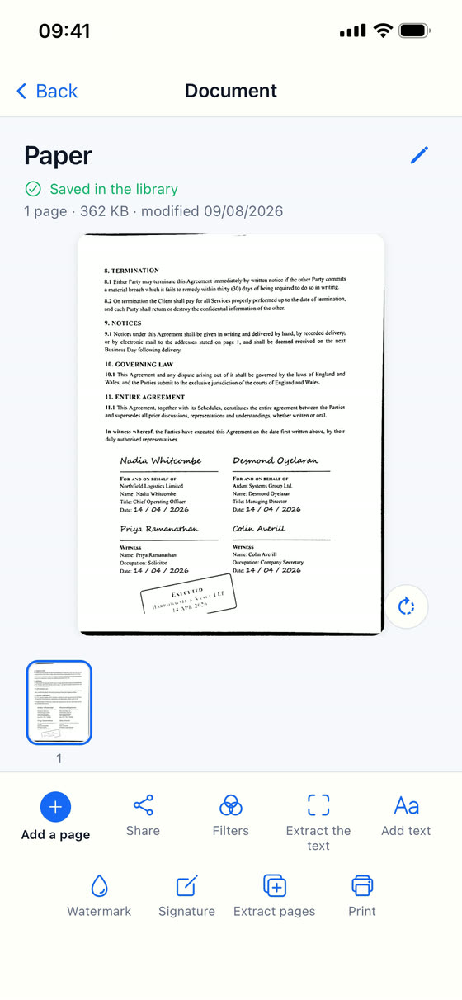

同一页纸，经 Scan Cam 处理后的样子。
在桌上揉皱着拍下，再还给您一张端正、洁白、清晰的页面。两张都是整页，没有做任何裁切。


它能做的一切
扫描
- 自动识别边缘并校正页面，拍歪了也没关系
- 四种效果：原始照片、彩色、灰度、黑白
- 强度用手指调节，预览实时跟随
- 一键去除阴影，适合在灯下或手下拍摄的页面
- 一个文档可含多页，可重新排序、旋转或移除
整理
- 文件夹和子文件夹，就像在电脑上一样
- 搜索也能找到藏在文件夹深处的内容，并告诉您它在哪里
- 重命名、移动、复制、删除
完成与分享
- 导出为 PDF 或 JPEG
- 在页面上添加文字
- 直接从应用打印
- 保存到「文件」应用，或通过 iPhone 的分享面板发送
没有任何东西离开您的 iPhone。
而且这一切都在您的手机上完成。无需注册账号，没有任何内容被发送到服务器，也没有广告。您的发票、合同和身份证件永远不会离开您的 iPhone——除非哪一天您自己决定分享它们。
PRO
Scan Cam Pro
免费版功能完整，永不过期：扫描、整理、滤镜、批注、打印和导出 PDF，想用多少就用多少。免费版导出的 PDF 会在页面底部带有一行小字「Scanned with Scan Cam」。
Pro 订阅另外提供：
- 不带任何标记的 PDF
- 文字识别，读取页面内容并交给您复制
- 签名，用手指书写并放在您想要的位置
- 水印，斜跨整个页面
- 将多个文档合并为一个
- 把页面抽取出来，生成新的文档
- 导出为 Word（.docx）和 Excel（.xlsx）
文字识别在手机上运行，无需联网：可识别拉丁字母、日文和中文。
每年 24.99 €，含 7 天免费试用。

有问题吗？
给我写信：回复的人就是我本人。
pierremunozfrance@gmail.com